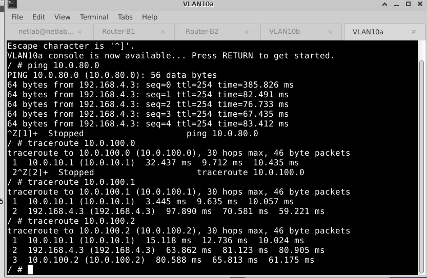

Basic Commands.
There are numerous commands available for various router types. To help you get started, consider the following commands and techniques:
- The CLI prompt will display a list of available commands for each command mode when you type a question mark (?)b>.
- Enter the first few characters of a command and press Tab key which would complete the command if the characters are unique to the command.
- You can use show ? which presents general show commands depending on which information you want to see. The most basic are show running-config, show interfaces, and show ip route.
- If you are in the configure mode and want to see parts of your running-config without exiting, you can for instance enter do show run | section bgp. Or something like the example given below.
Troubleshooting devices
To identify and fix problems encountered with a device that is not working correctly, you may opt to use the commands below:
- Use ping command to test the connectivity between two devices.
- Use traceroute command to track the path of packets to a particular destination and detect any problems that may arise along the way.
- Use debug command to show the information about the device operation, generated and/or received traffic, and any error messages.
This is an example of using ping, followed by traceroute:
